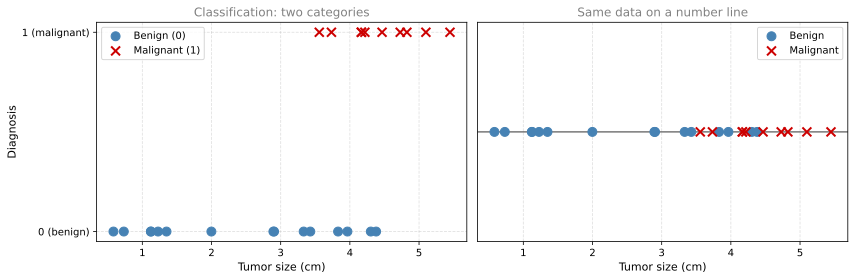
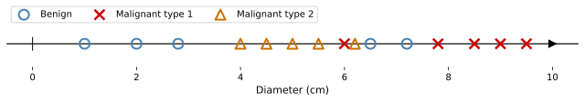
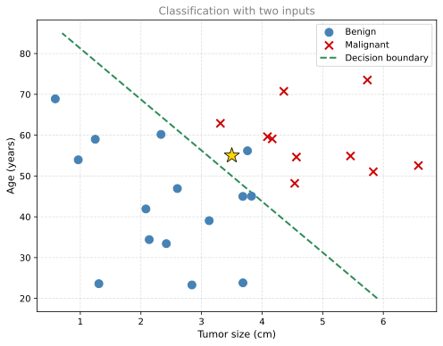

Supervised Learning
machine-learning
supervised-learning
Supervised learning refers to algorithms that learn input-to-output mappings (x to y). The key characteristic is that you give the learning algorithm…
What Is Supervised Learning?
Supervised learning refers to algorithms that learn input-to-output mappings (x to y). The key characteristic is that you give the learning algorithm examples to learn from, and those examples include the right answers. By “right answers,” we mean the correct label \(y\) for a given input \(x\).
By seeing correct pairs of input \(x\) and desired output label \(y\), the learning algorithm eventually learns to take just the input alone (without the output label) and give a reasonably accurate prediction of the output.
It is estimated that 99 percent of the economic value created by machine learning today comes through supervised learning.
Examples of Supervised Learning
Here are some common applications of supervised learning, along with their inputs and outputs:
| Input (x) | Output (y) | Application |
|---|---|---|
| Spam or not spam | Spam filtering | |
| Audio clip | Text transcript | Speech recognition |
| English text | Spanish, Arabic, Hindi, etc. | Machine translation |
| Ad and user info | Will user click? (yes/no) | Online advertising |
| Image + sensor data | Position of other cars | Self-driving cars |
| Image of product | Defect? (scratch, dent, etc.) | Visual inspection |
The most lucrative form of supervised learning today is probably online advertising. Large ad platforms use learning algorithms that take information about an ad and information about you, then predict whether you will click on that ad. Every click generates revenue, which drives significant income for these companies.
In manufacturing, visual inspection systems take a picture of a product (say, a phone coming off the production line) and determine whether there is a scratch, dent, or other defect. This helps manufacturers reduce defects and maintain quality.
In all of these applications, you first train your model with examples of inputs \(x\) and the correct labels \(y\). After the model has learned from these \((x, y)\) pairs, it can take a brand new input \(x\) (something it has never seen before) and produce the appropriate output \(y\).
Review Questions
1. What is the key characteristic that makes a learning problem “supervised”?
TipAnswer
The training data includes the correct answers (labels). The algorithm learns from examples where both the input \(x\) and the correct output \(y\) are provided.
1. A company wants to build a system that reads X-ray images and determines whether a patient has pneumonia. What would be the input \(x\) and output \(y\) in this supervised learning problem?
TipAnswer
The input \(x\) is an X-ray image. The output \(y\) is a label indicating whether the patient has pneumonia or not (yes/no).
1. Which of the following is an example of supervised learning?
- Calculating the average age of a group of customers
- Spam filtering
TipAnswer
b. Spam filtering. Emails labeled as “spam” or “not spam” are examples used for training a supervised learning algorithm. The trained algorithm will then be able to predict with some degree of accuracy whether an unseen email is spam or not. Calculating an average is a simple arithmetic operation, not a learning task.
1. Why is online advertising described as the most “lucrative” application of supervised learning?
TipAnswer
Because ad platforms predict which ads a user is likely to click on. Even a slightly higher click probability across billions of ad impressions translates to enormous revenue, since each click directly generates income for the platform.
Regression
Let us dive into a specific example. Say you want to predict housing prices based on the size of the house. You have collected some data: for each house, you know the size (in square feet) and the price it sold for.
If you plot this data with size on the horizontal axis and price on the vertical axis, you see a scatter of points showing that larger houses tend to cost more.
Now suppose a friend wants to know what price they could get for their 3,000 square foot house. One approach is to fit a straight line to the data. Reading off the line at 3,000 square feet gives one prediction. But fitting a straight line is not the only option. You might also fit a curve (a slightly more complex function), which could give a different prediction for the same house.
Later in this course, you will learn how to systematically choose whether a straight line, a curve, or an even more complex function best fits the data. The point is not to pick whichever gives your friend the best price, but to find the model that most accurately captures the relationship between size and price.
This is an example of supervised learning because the dataset contains the “right answers” (the actual sale price \(y\) for every house). The algorithm’s job is to learn from these examples and then predict the likely price for new houses it has not seen before.
Regression Defined
This particular type of supervised learning is called regression. In regression, the goal is to predict a number from infinitely many possible numbers. The house price could be $150,000, $70,000, $183,000, or any value in between. Whenever the output you are trying to predict is a continuous number, that is a regression problem.
There is also a second major type of supervised learning called classification, which we will look at next.
Review Questions
1. What makes the housing price prediction problem a “regression” problem?
TipAnswer
Because the output (house price) is a continuous number that can take infinitely many possible values. Regression problems predict numbers, as opposed to categories.
1. In the housing price example, what are the input \(x\) and the label \(y\)?
TipAnswer
The input \(x\) is the size of the house (in square feet). The label \(y\) is the price the house sold for (in thousands of dollars).
1. Why might a curve fit the housing data better than a straight line?
TipAnswer
A curve can capture non-linear relationships in the data. If the relationship between house size and price is not perfectly linear (for example, if very large houses increase in price more steeply), a curve will fit the actual pattern more closely than a straight line.
Classification
The second major type of supervised learning is classification. Unlike regression, where the goal is to predict a number from infinitely many possible values, classification predicts a category from a small, finite set of possible outputs.
Breast Cancer Detection Example
Consider building a machine learning system that helps doctors detect breast cancer. Using a patient’s medical records, the system tries to figure out if a tumor (a lump) is malignant (cancerous, dangerous) or benign (not cancerous, not dangerous). Early detection could potentially save a patient’s life.
Say your dataset has tumors of various sizes, each labeled as either:
- 0 = benign
- 1 = malignant
You can plot this data with the tumor size on the horizontal axis and the label (0 or 1) on the vertical axis:

Notice the key difference from regression. The output takes on only two possible values (0 or 1), not any number in between. The fact that there are only a small number of possible outputs is what makes this a classification problem.
More Than Two Categories
Classification is not limited to just two categories. For example, a cancer diagnosis system might output multiple types:
- 0 = benign
- 1 = malignant type 1
- 2 = malignant type 2

The terms output classes and output categories mean the same thing. Categories do not have to be numbers. A classification algorithm could predict whether a picture is of a cat or a dog, or whether an email is spam or not spam.
What makes classification different from regression is that classification predicts from a small, finite, limited set of possible outputs (such as 0, 1, and 2), but not all numbers in between (like 0.5 or 1.7).
Multiple Inputs
So far we have used only one input (tumor size). But you can use more than one input to make predictions. For example, you might know both the patient’s age and tumor size:

With two inputs (age and tumor size), the learning algorithm can find a decision boundary that separates benign tumors from malignant ones. When a new patient comes in, the algorithm checks which side of the boundary they fall on to make its prediction.
In practice, machine learning problems often use many more inputs. For breast cancer detection, researchers use additional features like the thickness of the tumor clump, uniformity of cell size, uniformity of cell shape, and so on.
Review Questions
1. What is the key difference between regression and classification?
TipAnswer
Regression predicts a number from infinitely many possible values (continuous output). Classification predicts a category from a small, finite set of possible outputs (discrete categories).
1. A machine learning system predicts whether an image contains a cat, a dog, or a bird. Is this regression or classification? Why?
TipAnswer
Classification. The output is one of three categories (cat, dog, bird), which is a small finite set, not a continuous number.
1. In the breast cancer example with two inputs, what is the role of the decision boundary?
TipAnswer
The decision boundary is a line (or curve) that separates the input space into regions. Points on one side are predicted as benign, and points on the other side are predicted as malignant. It is what the learning algorithm learns from the data.
Summary
Supervised learning maps input \(x\) to output \(y\), where the learning algorithm learns from the “right answers” (labeled data).
| Type | Output | Example |
|---|---|---|
| Regression | A number (infinitely many possible values) | Predicting house prices |
| Classification | A category (small finite set) | Tumor diagnosis (benign/malignant) |
Next, we will look at the second major type of machine learning: unsupervised learning.
Review Questions
1. Which are the two common types of supervised learning? (Choose two.)
- Clustering
- Regression
- Classification
TipAnswer
b and c. Regression predicts a number among potentially infinitely many possible numbers. Classification predicts from a limited set of categories (also called classes), such as “cat” or “dog.” Clustering is a type of unsupervised learning, not supervised learning.